In the following, xi,j = xm stands for the color value of the pixel
currently in position (i,j) = m in the  pixels original
image, and
pixels original
image, and
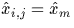
is the color value of the ``predicted'' (reconstructed) pixel of the reconstructed image. As seen in [11] and accordingly to Fig. 2, the configuration of the 2-D predictor is as following:
| 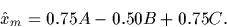 |
(2) |
where xm= xi,j,
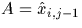
,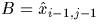
, and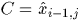
.In the above, em stands for the error value between the original and the reconstructed pixels:
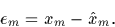 |
(3) |
Finally,
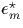
is the quantized value of em, as described in [11] from which Table 1 is drawn. Then:Algorithm PREDICTION
Input: xi,j = xm,
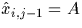
,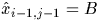
, and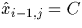
(see Fig. 2).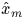
, then em and . Eventually, we update the value of .begin Compute accordingly to Eq. 2 Clip to the range [0,255] Compute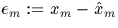
Compute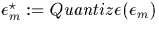
Upgrade by computing :=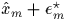
Clip to the range [0,255] end
| i | 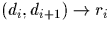 |
Probability | Huffman Code |
| (-255,-16) 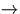 -20 |
0.025 | 111111 | |
| 1 | (-16,-8) -11 | 0.047 | 11110 |
| 2 | (-8,-4) -6 | 0.145 | 110 |
| 3 | (-4,0) -2 | 0.278 | 00 |
| 4 | (0,4) 2 | 0.283 | 10 |
| 5 | (4,8) 6 | 0.151 | 01 |
| 6 | (8,16) 11 | 0.049 | 1110 |
| 7 | (16,255) 20 | 0.022 | 111110 |
In fact, we add an offset of 128 to , making all of the error values positive (for an 8-bit original) so that they can be printed on a output device. The error image for a perfectly reconstructed image is thus uniform gray field with a code value of 128.
The DPCM algorithm is summarized in Figure 3. We
observe that it applies to every pixel of the image. That leads to the
following algorithm:
Algorithm PREDICTION_LOOP
Input: xi,j = xm, for all
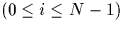
and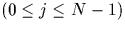
.begin Initialize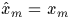
and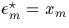
for all and j=0. for j=1 to N-1 do for i=0 to N-1 do Call PREDICTION on xi,j = xm, , , and (see Fig. 2). doend doend end
From Figure 3 one concludes that the prediction
(reconstructed pixel) for the transmitter is exactly the same as the
one used by the receiver. They both need, and only need, the quantized
difference . The transmitter puts this difference in a file, whereas
the receiver reads this difference from the file.
Finally, , which is the quantized difference for each pixel, and the whole picture (formed with these quantized differences) is compressed with Huffman code.